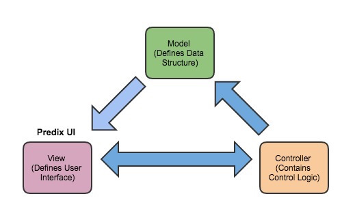

The Predix UI platform provides the ability to create modern web applications that run on top of Predix data and services..
Modern Web Applications
Web applications have evolved to implement many coordinated user functions and tasks traditionally associated with desktop software (for example, Google Docs and Microsoft Office). In addition, modern web browsers now have built-in support for open-source standards such as HTML5, Cascading Style Sheets (CSS), and JavaScript that reduce the dependency on proprietary web browser plugins such as Adobe Flash or Microsoft Silverlight
As a developer, you can create modern web applications that run on multiple web browsers and operating systems following the
model view controller (MVC) architecture, which separates functions that are built and maintained as independent modules:
- Model – The model stores and retrieves information from a database or data service. It defines the data structure for the information that is passed to the controller for processing and to the view for displaying to the user.
- View – The view is a visual summary of the information available in a web application. It is the user interface (implemented using HTML, CSS and JavaScript) that translates tasks and results to information that the user can understand and act on.
- Controller – The controller (implemented using JavaScript or other web technologies such as Java EE, Node.js, or Python) contains the application-control logic used to process commands, make logical decisions, and perform calculations. It also moves and processes data between the model and view modules.

Model View Controller Architecture
See the following resources for more information:
Predix UI Benefits
The Predix UI platform (
http://predixdev.github.io/predix-ui/) includes :
- A set of reusable web components to add features or access services following consistent UX practices, standards, and specifications.
- A set of composable and reusable CSS module libraries that establish consistent UI design.
See the following topics for more information:
As a developer, you can use the Predix UI platform to create a web application with the following benefits:
- Modular Architecture
-
The Predix UI platform provides a set of repositories in the PredixDev public GitHub organization that combine these elements:
- Component – User-interface element that allows you to add features or access services following consistent UX practices, standards and specification.
- Card – Component that resides within the content area of the user interface. You can create interactions between components within an individual card, as well as interactions with other cards based on user context.
- Deck – Componenet that supplies simple one-dimensional layout control for cards and components arranged in a specified order. This control can originate from the deck itself.
- View – Visual summary of the information displayed in a web application. It consists of one or more decks that an application user can select at runtime to quickly digest information and take appropriate action.
The Predix UI platform is modular by design, allowing you to add only the features and functions that you need. The modular architecture takes advantage of defined variables and default variants that provide the flexibility to change and configure existing applications, rather than use a large, complex, single-component repository.
- Framework Agnostic
-
Several JavaScript MVC frameworks exist (such as AngularJS, Backbone.js, and Ember.js) to encourage developers to write more structured code for client-side rendering of HTML pages. While each framework has its unique advantages, they all can use the Predix UI repositories to quickly create web applications. See Using a Predix UI Repository in a Web Application for more information.
Predix UI Features
As a developer, you can create a web application using the following Predix UI platform features:
- Fundamental Capabilities
- The Predix UI platform provides the following fundamental capabilities:
- Data-first visual design language that focuses on making information meaningful and useful for industrial users.
- Responsive web design that provides a consistent viewing and interaction experience across laptop, tablet, phone, or large-screen devices.
- Simple
-
The
Predix UI platform uses the open-source
Polymer library of web components to support the following features:
- Custom elements — Define new elements in HTML.
- HTML imports — Load HTML, CSS and JavaScript resources as an aggregated HTML file.
This simplifies the effort to build web applications that provide many of the characteristics of desktop software across web browsers.
- Extensible
- The Predix UI platform can be extended to support the following features:
- Compose multiple web components into a single instance.
- Add graphics with a web component.
- Style a web component with CSS.
- Handling an event from a web component.
- Modifying attributes of a custom web component.
- Connectors and Adaptors
-
The Predix UI platform includes default connectors and data adapters used to quickly connect such Predix services as Asset, Time Series, and Key Value Store.
See the
Predix UI Seed Overview for information on a
starter kit that you can use to deploy as a web application to a local developer environment and Cloud Foundry. The
Predix UI Seed provides you with the following features and services:
- Application Navigation
- Responsive Layout
- Routing
- Data Binding
- View Switching
- Data Visualization
- Date and Time Input
- Service Integration
 © 2015-2017 General Electric Company. All rights reserved.
© 2015-2017 General Electric Company. All rights reserved.